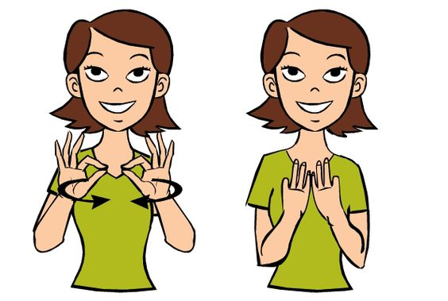

Qëllimi kryesor i aplikacionit tonë është të ofrojë një mënyrë të thjeshtë dhe efektive për të mësuar gjuhën e shenjave të Kosovës (KSL). Me një përkushtim të thellë ndaj përmirësimit të komunikimit dhe kuptimit për komunitetin me dëgjim të kufizuar, synojmë të kontribuojmë në rritjen e përfshirjes së tyre në shoqëri. Përmes një qasjeje profesionale dhe me ndjeshmëri sociale, jemi të vendosur të sjellim një aplikacion cilësor dhe edukativ për të gjithë komunitetin në Kosovë.
Gjuha e Shenjave Kosovare (GjShK) është një gjuhë natyrore që përfaqëson komunitetin e personave me dëgjim të kufizuar në Kosovë. Më 29 shtator 2010, Qeveria e Kosovës e njohu zyrtarisht GjShK-në, duke theksuar rëndësinë e saj për përfshirjen dhe të drejtat e këtij komuniteti. Kjo njohje ndihmon në promovimin e komunikimit dhe shkëmbimit kulturor, duke kontribuar në një shoqëri më të barabartë dhe të përfshirë.
Gjuha e shenjave kosovare, si çdo gjuhë tjetër shenjash, është një gjuhë natyrore me gramatikë dhe strukturë të veçantë. Në vitin 2006, Shoqata Kosovare e të Shurdhërve (ShKSh), me mbështetje nga Shoqata Finlandeze e të Shurdhërve (FAD) dhe Ministria e Punëve të Jashtme të Finlandës, nisi një projekt për të dokumentuar GjShK si gjuhën amtare të komunitetit me dëgjim të kufizuar në Kosovë.
Komunikimi përmes gjuhës së shenjave është thelbësor për kulturën e komuniteteve të personave të shurdhër. Kontakti pamor i qëndrueshëm dhe i papenguar gjatë diskutimeve është shumë i rëndësishëm. Për të siguruar një komunikim të lirë, nevojitet ndriçim i mjaftueshëm; në errësirë, komunikimi mund të zhvillohet në formë taktile, që është e preferuar nga komuniteti shurdhë-verbër.